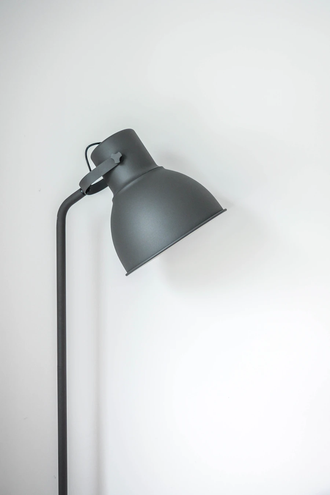

Objetos de autor / Colección permanenteHabitar
Habitar
lo cotidiano.
FORMA & PRESENCIA
La belleza está en lo que eliges conservar. Objetos con carácter para tus espacios y tus rituales.
Explorar la colección
PIEZAS CON PRESENCIA
Diseño que acompaña.
Materiales que cuentan.
El catálogoPequeños rituales.
Pequeños rituales.
Buenas piezas.
Elegir menos.
Sentir más.
Una lámpara que cambia una habitación. Una pieza que ordena la mesa. Un sonido que llena el espacio. MATERIA reúne objetos cotidianos desde una mirada atenta a la forma, la utilidad y el tiempo.
Tienda conceptual con fotografías ilustrativas. Puedes explorar la colección y probar el carrito; no se procesan pedidos ni pagos.